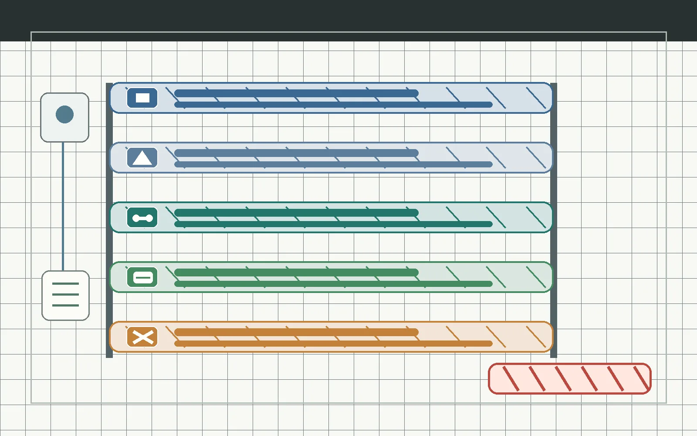

R&D loop
Role lanes and milestone gates define the next action before implementation work advances.
Visual blueprint
The visuals are public-safe review backplates. Exact labels stay in HTML text so the page can be audited without encoding unverified pinouts, wire colors, terminal order, serial IDs, or load-side procedures into an image.
Storyboard
Role lanes and milestone gates define the next action before implementation work advances.
Power, voltage, boot-pin, isolation, relay trigger, and load-side checks stay explicit.
Passive discovery and allowed AT reads are separated from setting writes.
Static assets and logs are shown as a storage path, not proof of a live board.
Load or mains work stays outside the public guide until qualified review closes.



Glossary
A general-purpose ESP32 signal pin. A label does not prove it is safe to drive a relay.
An electrically controlled switch. This project has not approved its load side.
A selector for sharing one input path across many signals. It is not used for relay output holding.
A chip that adds more low-voltage I/O. It must be proven on LEDs or a logic analyzer first.
The radio module. Current work starts with read-only identification through a PC adapter.
The planned local screen. Its exact module, power, and wiring are unresolved.
Storage for static assets and logs. Its bus and pin plan remain part of the low-voltage review.
A documented stop point that must close before the next bench action is allowed.